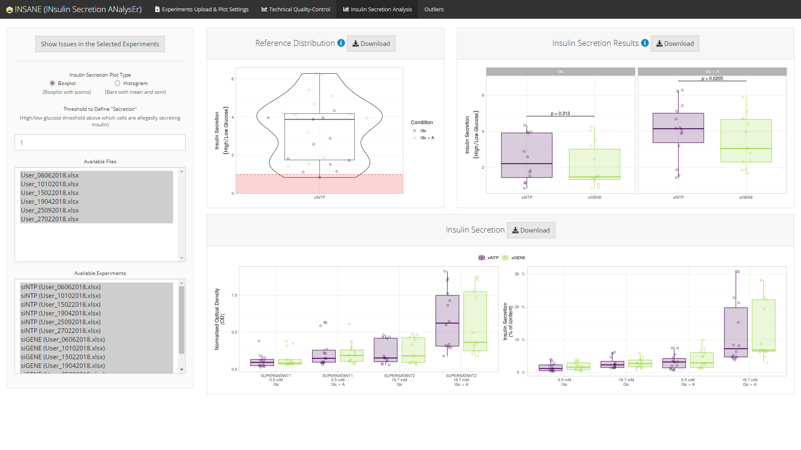
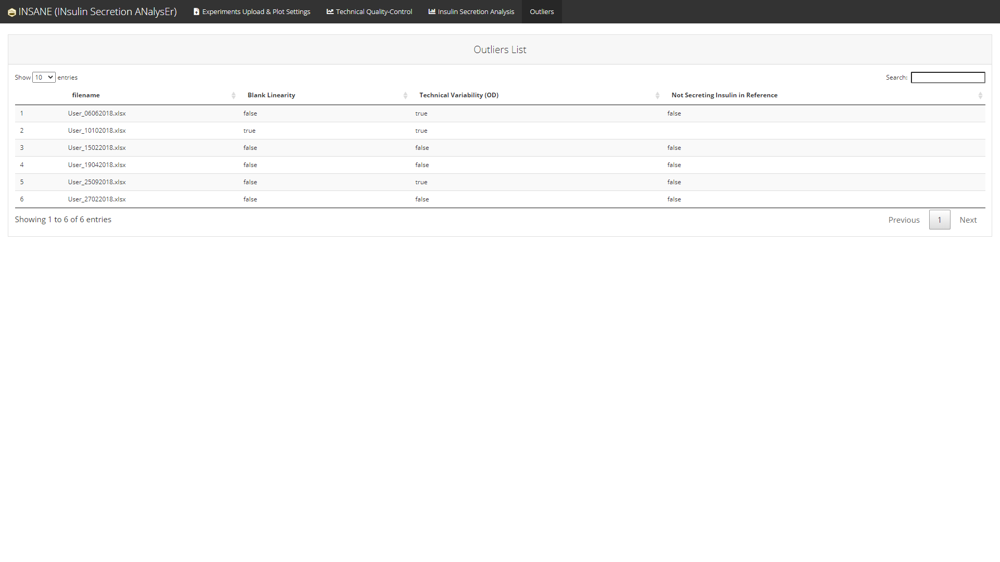

A user-friendly interface, using Shiny, to analyse glucose-stimulated insulin secretion (GSIS) assays in pancreatic beta cells or islets.
The package allows the user to import several sets of experiments from different spreadsheets and to perform subsequent steps: summarise in a tidy format, visualise data quality and compare experimental conditions without omitting to account for technical confounders such as the date of the experiment or the technician.
Together, insane is a comprehensive method that optimises pre-processing and analyses of GSIS experiments in a friendly-user interface.
The Shiny App was initially designed for EndoC-betaH1 cell line following method described in Ndiaye et al., 2017 (https://doi.org/10.1016/j.molmet.2017.03.011).
Installation
# Install insane from CRAN:
install.packages("insane")
# Or the the development version from GitHub:
# install.packages("remotes")
remotes::install_github("mcanouil/insane")
Overview
The Shiny (R package) application insane (INsulin Secretion ANalysEr) provides a web interactive tool to import experiments of insulin secretion using cell lines such as EndoC-βH1.
Excel Template (top)
An Excel template is provided within the app to help users import their experiments in an easy way.

The App (top)
insane provides a user-friendly interface which can handle several projects separately.

Technical Quality-Control (top)
insane performs technical quality-control of the optical density measured in each steps of the experiments:
- blank (BLANK),
- lysat (LYSATE),
- supernatant (SUPERNATANT1 and SUPERNATANT2).
This technical quality-control step checks:
- the variability among the duplicated optical density measures of each samples;
- the variability in the blank curves (intercept and slope estimates) among all experiments in a project.

Statistical analyses (top)
insane performs statistical analyses of the experimental conditions, e.g., one silenced gene (siGENE) compared to an insulin secretion reference (siNTP) in two stimulation conditions (Glc and Glc + A).
Conditions are compared using a linear regression with Date and Operator as covariates (if needed) to control for heterogeneity.
-
Using all experiments in the selected project
-
Boxplot version

-
Histogram version

-
-
Using some of the experiments in the selected project

If and when some experiments are failing any of the technical quality-controls, a summary of the issues regarding the selected experiments can be displayed using the button Show Issues in the Selected Experiments.


List of Outliers (Issues Detected) (top)
A comprehensive list of all issues detected in the selected project is available in an Outliers tab.

Note: The Outliers tab is displayed only if there is at least one issue in the selected project.
Getting help
If you encounter a clear bug, please file a minimal reproducible example on github.
For questions and other discussion, please contact the package maintainer.
Please note that this project is released with a Contributor Code of Conduct.
By participating in this project you agree to abide by its terms.